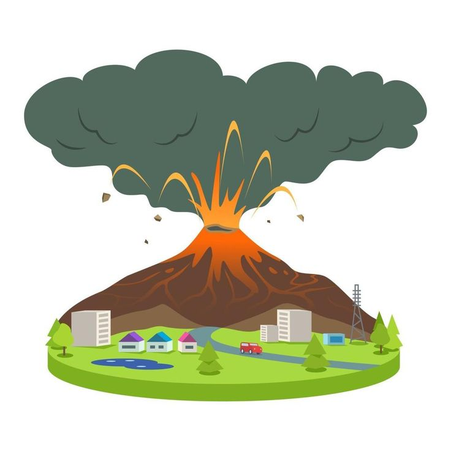

Dangerous Hazards
Understand the impacts & how to prepare
Impacts
Immediate Threats
Lava flows, ashfall, and toxic gas emissions can cause sudden destruction and serious health risks.
Wide-reaching Impacts
Volcanic ash can spread over large areas, affecting air quality, agriculture, and water sources.

Infrastructure Damage
Roads, bridges, and Buildings may collapse or be blocked, disrupting transportation and emergency response.
How to Prepare
Evacuation Planning
Relocate people quickly fromhigh-risk zones to safe shelters.
Health Protection
Use masks, goggles, and clean water to protect against ash and harmful gases.
Information and Alerts
Follow official warnings and scientific updates for timely action.